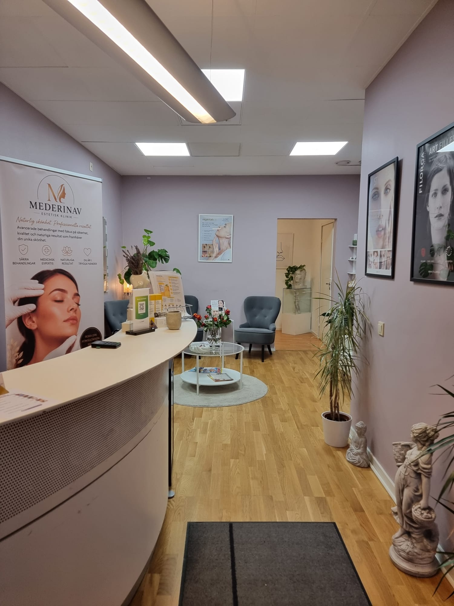
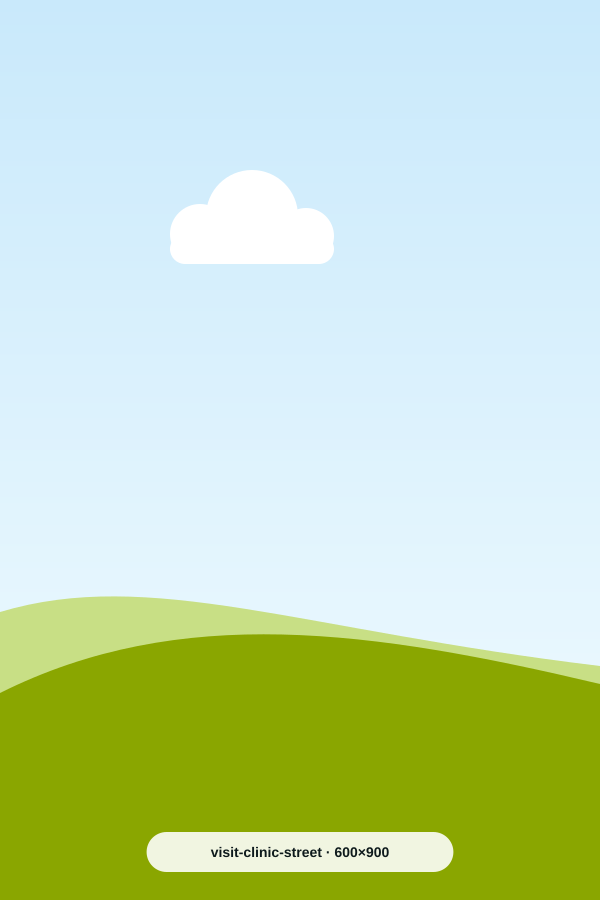

Medicinska behandlingar
Läkarkonsultation, födelsemärkeskontroll och borttagning av hudförändringar.
Läs mer om medicinska behandlingarMederinav Health Care är en läkarledd klinik för medicinska behandlingar, estetiska injektioner och fotvård. Vi tar oss tid att lyssna – och behandlar bara när det är rätt för dig.

Från läkarbesök till estetiska injektioner och medicinsk fotvård – alltid med en konsultation först.
Läkarkonsultation, födelsemärkeskontroll och borttagning av hudförändringar.
Läs mer om medicinska behandlingar
Hyaluronsyra för läppar, kindben och käklinje – subtilt och naturligt.
Läs mer om fillers
Mjukar upp mimikrynkor i panna och kring ögon, samt behandlar svettningar.
Läs mer om botox
Medicinsk fotvård, nageltrång, liktornar och anpassad vård vid diabetes.
Läs mer om fotvård
Dra i reglaget för att jämföra. Alla bilder publiceras med patientens samtycke.


Resultat varierar från person till person. Vid konsultationen går vi igenom vad som är realistiskt för just dig.

Läkare · Specialist i allmänmedicin och allmän kirurgi
Christian kombinerar bred klinisk erfarenhet från akutsjukvård och kirurgi med ett stort intresse för medicinsk estetik. Hans filosofi är enkel: ärlig rådgivning, noggrann medicinsk bedömning och resultat som ser naturliga ut.

Medicinsk fotterapeut & hudterapeut
Lorena ansvarar för klinikens fotvård och hudvård. Med ett varsamt handlag och stor kunskap om fotens hälsa hjälper hon allt från förebyggande vård till besvärliga nagel- och hudproblem.
Läs mer om Lorena
Pendeltåg till Huddinge station, därefter en kort promenad till kliniken.
Flera busslinjer stannar vid Huddinge centrum, några minuters promenad bort.